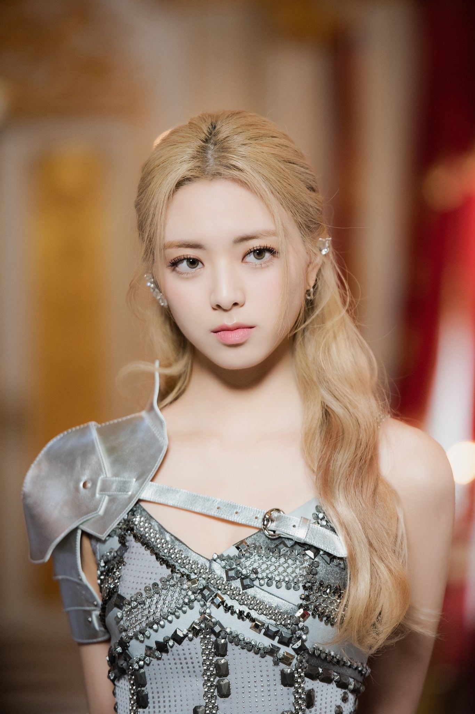

Вокалистка, ведущий танцор, рэпер, вижуал, макнэ группы - Юна
Родилась 9 декабря 2003 г.
По национальности кореянка, в школьные годы носила брекеты, рост – 170 см.Самая юная участница «ITZY», окончила школу в декабре 2018 года. В состав «ITZY» попала после участия в шоу «Stray Kids». Также засветилась в «BTS Light Highlight Reels». Стажировалась в течение 3 лет. Сегодня учится на хореографическом факультете школы Hanlim. Фанаты считают ее похожей на Кюлькюнг из «PRISTIN». В общежитии живет в комнате с Лией.